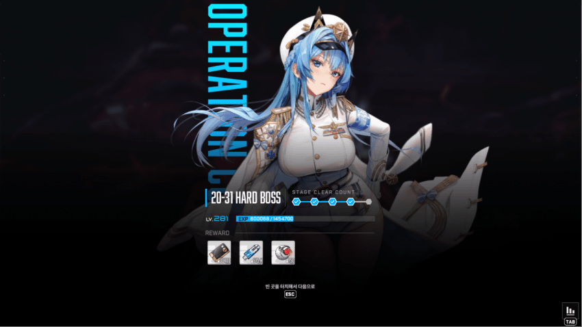
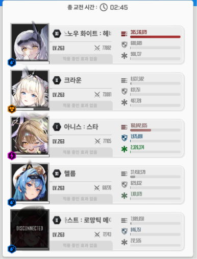
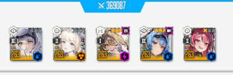

클리어 투력
배치는 위처럼 하는게 좋음.
딜러 스펙 및 크라운 장탄
크라운 장탄을 갖고 온 이유는 크라운 안 쳐다봐도 알아서 도발되길래 참고하라고 올림
이 MZ 택틱은 챈에 올라온 택틱으로
코코볼 기다렸다가 크라운 버스트 쓰니 어쩌니 그런거 없이
걍 칼같이 버스트 키고 첫 저지도 안 하고 넘겨버리는 택틱임
영상을 찍긴 했는데 실수가 워낙 많아서 그냥 그렇구나 하고 글을 중점으로 읽어주셈
우선 스화 선버인데, 크라운 메스트 순서가 좀 특이함.
버스트 순서 - 메크크 크메크
이후 끝날 때까지 크크크
본디 니힐을 잡을 때는 코코볼을 크라운 버스트로 씹는게 국룰이지만
이 택틱은 메스트 선버로 시작해서 딜을 뽑고 3스택 메스트를 버리고 크라운을 키는게 핵심임
버스트 순서대로 뭘 해야하는지 설명
시작하면 스화 1방+헬름 톡톡이로 최대한 빠르게 버스트를 킴 메스트
스화 잡기 전에, 헬름 톡톡이로 스화한테 날라가는 첫번째 코코볼의 피를 최대한 깎음.
스화가 풀차지 타격하면, 공격 가능한 투사체에 딜이 박히면서 코코볼이 파괴됨. 딜이 모자라면 따로 쳐주거나 태보해야 함.
머신건 치면 풀버 끝나기 직전에 저지원이 생김.
이때 칼 저지하지 말고, 머신건 타겟이 피가 갈려서 죽기 전에 첫 저지원을 저지해줌 크라운
이후 저지는 무시하고 계속 머신건에 빡딜 넣다가 스화로 5~6방 치고는 반대쪽 머신건 치기 시작.
첫 저지를 실행하면 머신건 타겟이 옮겨지는데
내 스쿼드 기준으로는 메스트 빼고 전부 헬름 피흡으로 머신건을 버팀.
세번째 머신건은 크라운이 도발+무적으로 흡수해주니까 그냥 빡딜 하면 됨.
버스트 끝날때 쯤 니힐이 파츠 가운데로 모으고 전체기 준비를 하는데
이때 버스트가 돌아도 쿨이 약간 모자란 상태가 됨.
그래서 스화로 차지를 땡긴 상태에서 쿨 되는대로 버스트를 키는데 메스트가 아닌 크라운을 키는게 핵심임.
크라운의 보호막으로 니힐의 불 3타 중 첫타를 씹을 수 있음.
첫타를 씹는 타이밍에 맞물려서 스화의 풀차지 타격을 날릴 수 있기 때문에
파츠 모여있는 곳에 쏴서 딜 빡으로 넣고 칼같이 엄폐하면 됨.
전체기가 끝나면 엄폐 해제 후 풀차지를 땅기고 피 많은 머신건을 쏘면 됨.
이때 니힐이 점프하기 바로 직전에 타격이 가능한데, 혹시 헛방 날리는게 무서우면 영상처럼 안전하게 착지 후 쏴도 됨.
그후 머신건 피를 균형있게 맞추기 위해 다시 개같이 패면 됨 크라운
크라운을 후열에 배치하는 이유가 여기서 나오는데 미사일의 타겟이 도발 켜진 크라운이기 때문임.
니힐이 엄폐물 갈아버리는 미사일을 발사할 때 후열(2번, 4번)에 있으면 전열 엄폐물이 흡수해줘서 엄폐물이 다 안갈리고 남음.
1,3,5번에 크라운 두면 엄폐물 다 갈려서 다음 전체기까지 2페 가야됨. 안 그러면 크라운 통구이됨.
미사일과 동시에 코코볼이 날라오는데, 날라오는 즉각 파괴해줘야 함.
이번 코코볼은 크라운 보호막이 꺼져버리는 타이밍과 맞물리기 때문임.
풀버가 끝나면서 코코볼이 안 깨지니까 4번 5번에 있는 애들은 개인 태보를 해줘야 함.
크라운 버스트를 써도 되지만, 딜을 최대한 우겨넣기 위해 여기서 메스트 버스트를 켜줘야 함. 메스트
처음 저지와 달리 이번엔 버스트를 키고나서 저지가 생김
이번 저지는 해주면서 핵심은 스화 풀차지를 땅긴 상태에서 저지를 하다가, 머신건 2개를 한꺼번에 파괴해야 함.
머신건 2개 중 하나가 깨지면 머신건 딜이 갑자기 존나 세져서 절대로 못 버팀.
그래서 쏘기 전에 머신건 2개를 다 깨야 됨.
영상에서는 ㅄ같이해서 저지를 못 했는데 저지하면서 머신건 스윽 지나갈 때 스화 풀차지 쏘면 됨.
그 뒤로는 버스트 되는대로 바로 켜서 패주면 됨 크라운
이후로는 프로텍터 후딱 깨고 2페 진입하면 되는데
영상처럼 딜이 모자라서 코코볼 패턴 보고 2페를 가는 경우에는 버스트 쓰지말고 개인 태보로 넘겨야 함.
2페 진입하면 바로 전체기 쏘는데 크라운 보호막이 코코볼로 깨지면 그 즉시 통구이되버림.
2페 진입 후에는 걍 뚝배기 개같이 패면 됨. 레이저는 크라운 보호막이 버텨주니까
코코볼만 태보하던가 부수던가 하면 됨. 2페 오면 사실상 깬거랑 다를 바 없음.
크라운 버스트만 꼬박꼬박 칼같이 눌러주면 됨. 전체기랑 맞물리기 때문에 실수할 일이 거의 없을거임.
이 mz 택틱의 핵심은
칼같이 버스트 굴려서 진행하는거라고 보면 됨.
노말 니힐에도 유효한데, 노말 니힐은 걍 리타 빌려서 원래대로 깨는게 나을듯
어쨌든 타워, 하드 등 모든 니힐한테 유효한 택틱임.